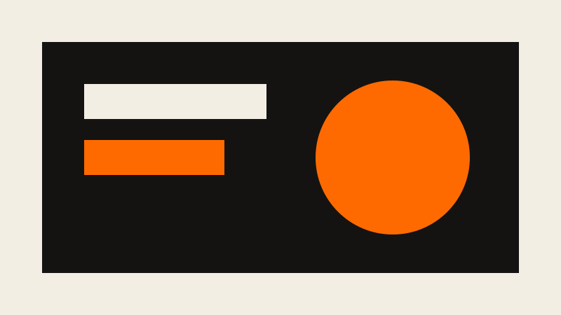

Fixture · Writing
Markdown test document
This document exercises every construct a blog post is likely to use. It is the source of markdown-test.html, which is the same content hand-rendered to HTML; every template's blogpost.html embeds that rendered fragment verbatim, so if you change one you change all three. It borrows the shape of mxstbr's markdown-test-file and adds the things that file leaves out (tables, images, task lists, footnotes, definition lists).
Headings
The line above is a level-two heading. Below are the remaining levels.
A third-level heading
A fourth-level heading
A fifth-level heading
A sixth-level heading, which is as deep as it goes
Paragraphs and inline text
Paragraphs are separated by a blank line. A single newline inside a paragraph does nothing; two trailing spaces
force a hard line break like the one before this clause.
Text can be emphasised or strong or both; it can be struck through, and it can hold inline code such as printf() or <br>. Abbreviations get an HTML tag, keyboard input a Ctrl + K pair, a highlight uses mark, and chemistry needs H2O while footnotes need a superscript.1
Links come in three kinds: an inline link, a reference-style link, and a bare URL such as https://example.org.
Lists
An unordered list:
- Apples
- Pears
- A nested item
- Another nested item, with emphasis
- Plums
An ordered list, whose numbers do not have to be in order in the source:
- First
- Second
-
Third, with a paragraph of its own.
This paragraph belongs to the third item.
print("and so does this code block")
A task list:
Blockquotes
A blockquote can hold several paragraphs.
It can also hold a list:
- one
- two
And it can nest another quote, with a heading inside:
Quoted heading
Which is unusual but legal.
Code
Fenced code with a language:
export function greet(name = "world") {
return `Hello, ${name}!`;
}
Fenced code in a second language, with a long line to test overflow:
.card { display: grid; grid-template-columns: minmax(0, 1fr) auto; gap: var(--space-3); padding: var(--space-4); border: 1px solid var(--border-color); }
Indented code, four spaces:
$ python tools/check.py --template plain
checked templates/plain: 0 error(s), 0 warning(s)
Tables
| Component | Element | Needs JS |
|---|---|---|
| Accordion | <details> |
no |
| Dialog | <dialog> |
one line |
| Lightbox | <dialog> |
one line |
| Switch | <input> |
no |
The first column is left-aligned, the second centred, the third right-aligned.
Images
Images can also sit inline in a paragraph, like this small one:

which the stylesheet should keep from breaking the line height too badly.Horizontal rule
The line below is a thematic break.
Definition list
Markdown has no syntax for these, so they are written as HTML:
- Token
- A named value in
theme.cssthat components reference instead of a literal. - Palette slot
- One of the nineteen
--pal-*tokens a retoken theme fills in.
Details
A collapsed section
This paragraph is hidden until the summary is clicked. It uses the browser's native disclosure, so it needs no script.
Footnotes
The footnote referenced near the top of the page is rendered at the end.2